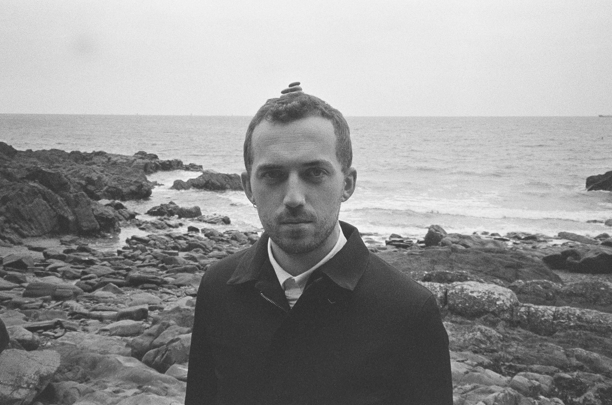

I have impacted the physical world, I have created works, and I have been a guiding hand.

{{ s.headline }}
See: {{ e.stubLabel }} →
{{ e.body }}
{{ e.detail }}
BA(Hons) Popular Music, MTU Cork School of Music, first-class honours. Dissertation Beyond the Bedroom: The Scope of Production in Contemporary Popular Music — highest undergraduate dissertation result in the college, nominated by MTU for the CHMHE Undergraduate Musicology Prize. Awarded the Colin Vearncombe Memorial Bursary.
MA Arts Management and Creative Producing, University College Cork, first-class honours. Thesis on experimental and collaborative methodologies in arts festival programming and the development of cultural and social capital. Awarded the Puttnam Scholarship.
QQI Level 5 Digital Marketing, Open College, 2020.
Cognex : 2021
Four months at a machine vision and barcode manufacturing facility as a warehouse operator. COVID staffing problems had left them needing someone to step in and, in their words, ‘resolve interruptions’ — walking up to a shelf of boxes, reading dockets left by assembly line workers, and fixing whatever had stopped a build or a shipment. Printer faults, parts appearing on the system that producers couldn't find. I diagnosed problems every single day in unfamiliar technical systems, jogging around a factory looking for cables and digging through shipping documents to figure out where a box of parts might have wound up. It was amazing fun.